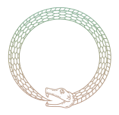

Input
GLB to be added

ProxyborosAnonymous Submission 2724
Proxyboros repairs dynamic self-intersections in rigged mesh animations while preserving the original motion.
Qualitative Comparisons
Motion Case 01
Drag any model to rotate all views. Scroll to zoom.
Interactive Animation Gallery
Explore Original / Repaired splits. Browse one motion at a time, or let the gallery advance when idle.
Submission Notes
Keep this page anonymous: use neutral filenames, remove author and institution names from assets, and avoid external links that identify the authors before the review period ends.